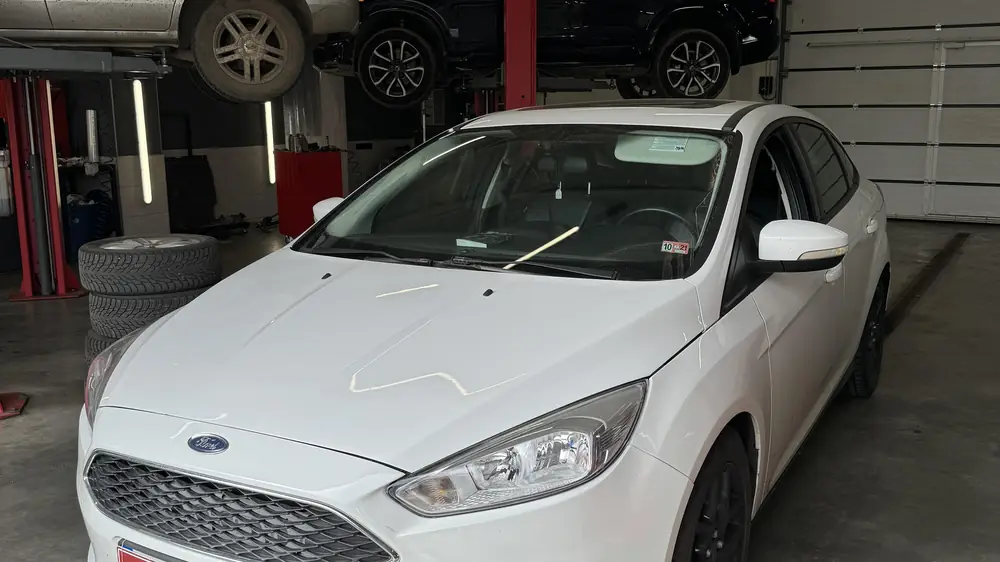
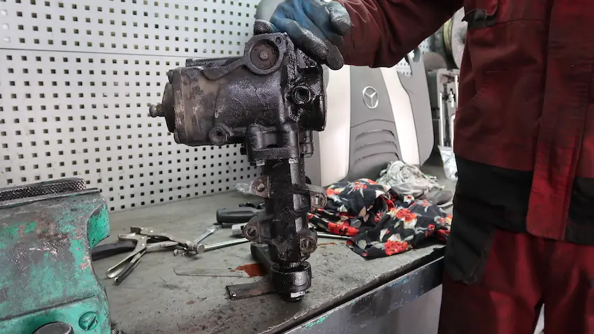
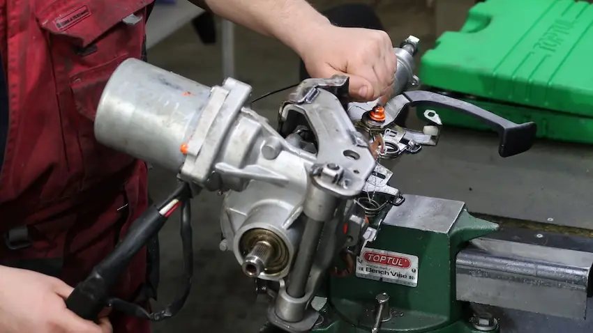

22.04.2024Чому на Ford Focus часто виходить з ладу кермова рейка, як вологу в рейці пов'язано з підшипником і шківом та як проходить ремонт у «Автодокторі».

20.04.2024Чим кермовий редуктор вантажівки відрізняється від рейки, які бувають редуктори, за якими ознаками помітити поломку і як проходить ремонт у знятому вигляді.

19.04.2024Чому на Hyundai Accent 2007 виходить з ладу датчик електропідсилювача керма (зношення графітових доріжок) і як «Автодоктор» вирішує цю проблему після закінчення гарантії.